Stamsjö Backyard Ultra - Ett långt träningpass
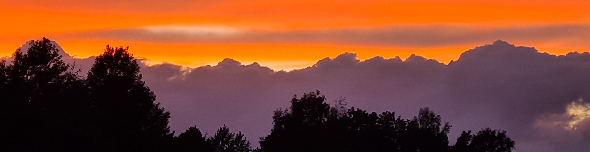Stamjö Backyard Ultra är tänkt att utspela sig en gång per år. Första gången hände den 17:e april 2021. Nästa gång blir tidig sommar 2022, närmare bestämt lördagen den 11:e Juni
Läs mer om backyard ultra här. I korthet går det ut på att springa/gå ett varv på 6706 meter på en timma, så många gånger man orkar.
Om du vill du vara med kan du lägga in ditt namn (eller något annat som du kommer ihåg) i doodlen här.
Rundan är alltså 6706 meter lång. Varje nytt varv påbörjas 60 minuter efter att föregående varv startades. Första varvet startar 11:00
Slingan går runt sjön Stamsjön i Lerum. Det är en ganska platt historia med total stigning på kanske 50-60 meter per varv
Banprofilen ser ungefär ut såhär
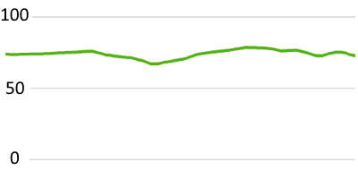Underlaget är blandat: Mest anlagd stig, en del grusväg, (väldigt) lite terräng och en del cykelbana på asfalt.
Fördelningen ser ungefär ut som följer (klicka för bild med högre upplösning):
| 340 meter terräng | 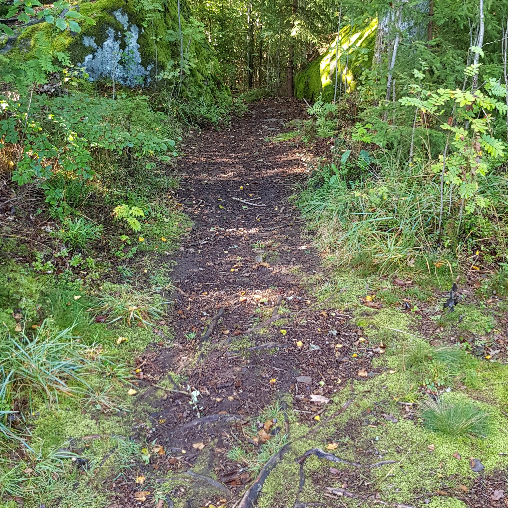 |
| 1410 meter asfalt | 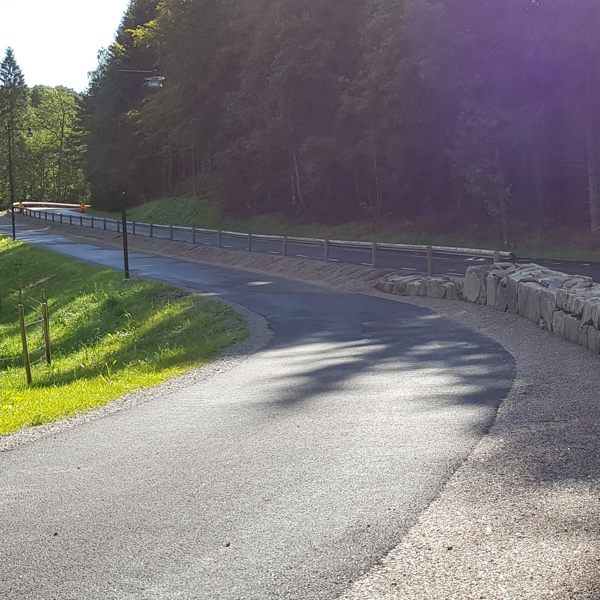 |
| 1950 meter grusväg | 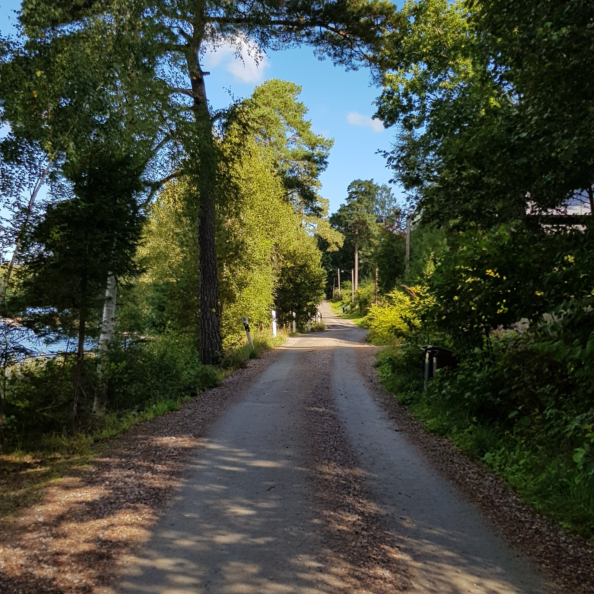 |
| 2966 meter stig | 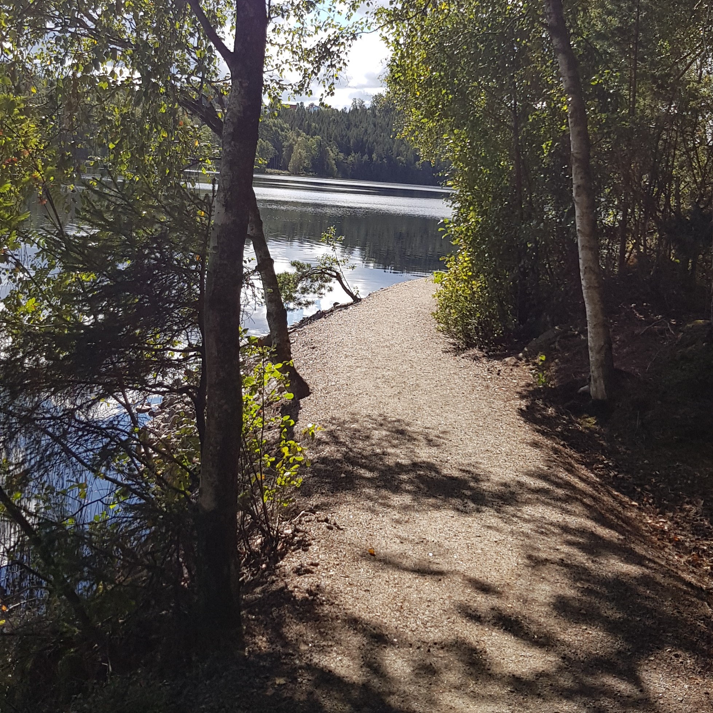 |
| 50 meter bostadsområde :-) | 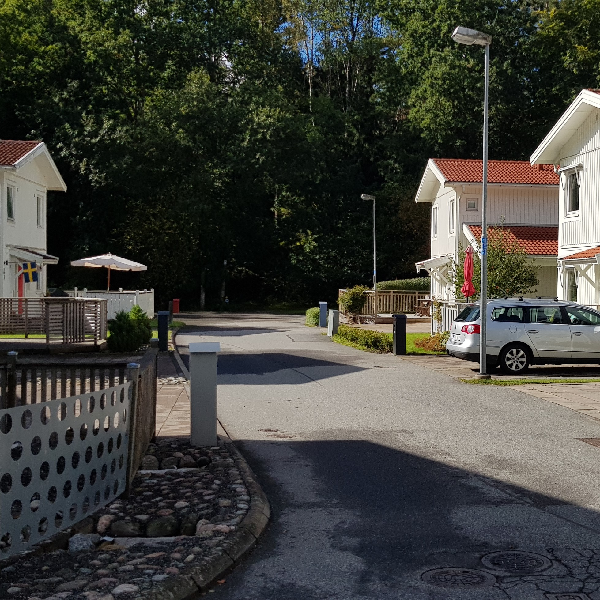 |
{kind=link}
{kind=link}
{kind=link}
{kind=link}
{kind=link}
Som grädde på moset ingår även 36 trappsteg (uppåt, såklart)

En av de högsta punkterna (som inte är särskilt hög)

För det mesta spinger man nära Stamsjöns vattenspegel
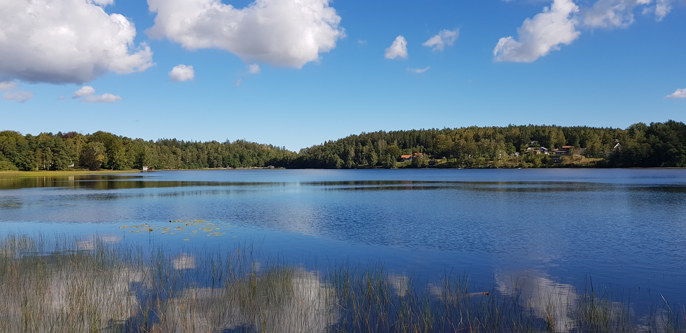
{kind=link}
Som sagt
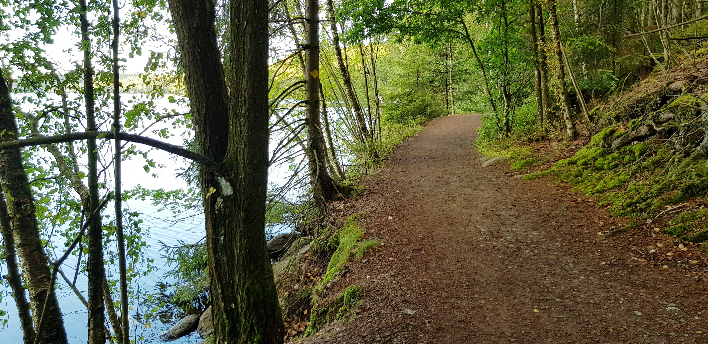
{kind=link}
Som sagt #2
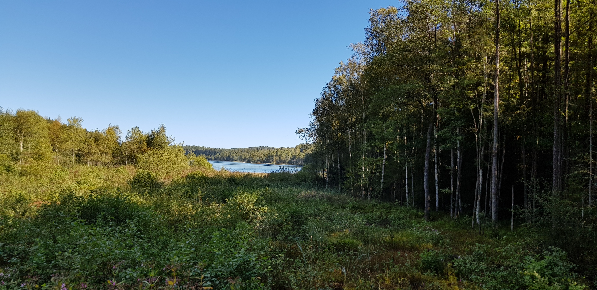
{kind=link}
Start och mål vid stamsjöns badplats

Bansträckningen ser ut såhär
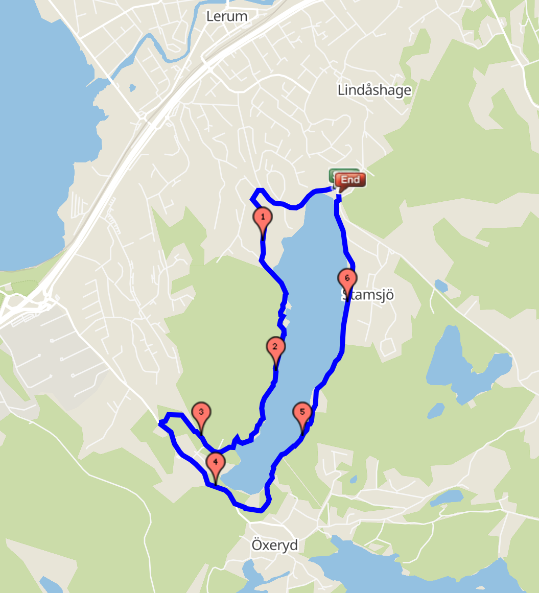
{kind=link}
Vid badplatsen finns bajamaja, om vi har tur. Annars finns gott om skog.